Биткоин это цифровая валюта создана Satoshi Nakamoto в 2009 году. По сравнению с обычными валютами она не подкреплена золотом или товаром, она не принадлежит ни одной стране мира. Полная капитализация рынка биткоинов на 5 декабря 2017 года, когда курс достигал 12000 $, составила 200 млрд USD, что позволило стать шестой по капитализации валютой мира, обойдя рубль, фунт и южнокорейскую вону.
Сейчас один биткоин стоит 13500 $. Его цена обусловлена тем, что он очень защищен. Никто не может просто у вас его забрать. Банки, когда банкротятся деньги не возвращают, государство при необходимости может допечатать валюты, что приведет к ее обесцениванию, тем самым вы потеряете деньги (то есть их стоимость упадет). С биткоином такого произойти не может, его просто так никто не допечатает, ну и с банками он ничего не имеет. Также биткоин еще популярен своей анонимностью - никто не сможет контролировать сколько у вас денег, кому и когда вы пересылали или получали деньги, одним словом никто не сможет залезть в ваши личные счета ни государство, ни налоговая. Именно это способствует тому, что желающий приобрести биткоин с каждым днем все больше.
Хотя с момента создания курс биткоина только растет сейчас его цена сильно колеблется и вкладывать свои деньги, особенно большие, рискованно, а вот заработать биткоин может каждый. Например на сайте freebitco.in можно получить биткоин за расшифровку капчи. Заработав определенную сумму ее можно перекинуть на свой кошелек. Попробуйте попользоваться этой валютой, оплатить ней что-то а потом сами решайте стоит вкладывать свои деньги.